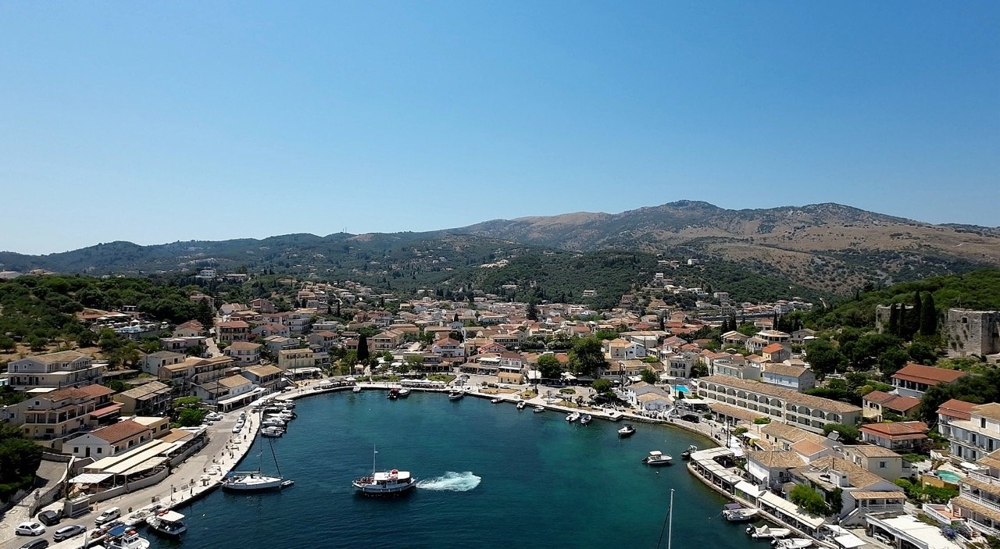
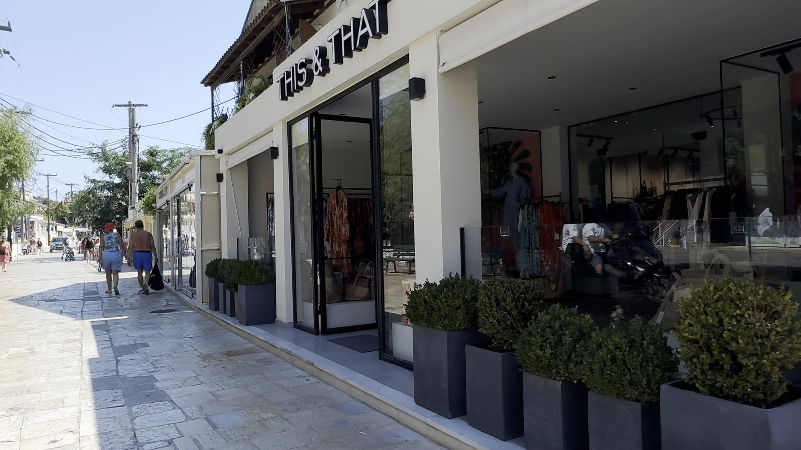
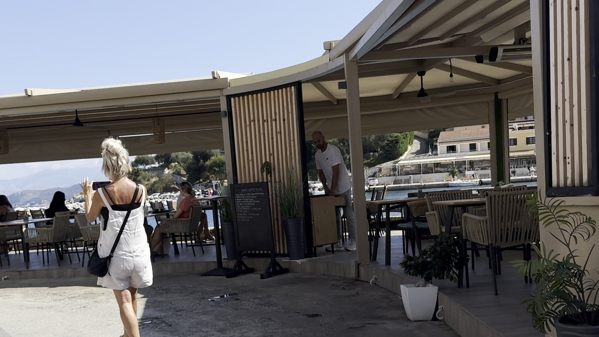
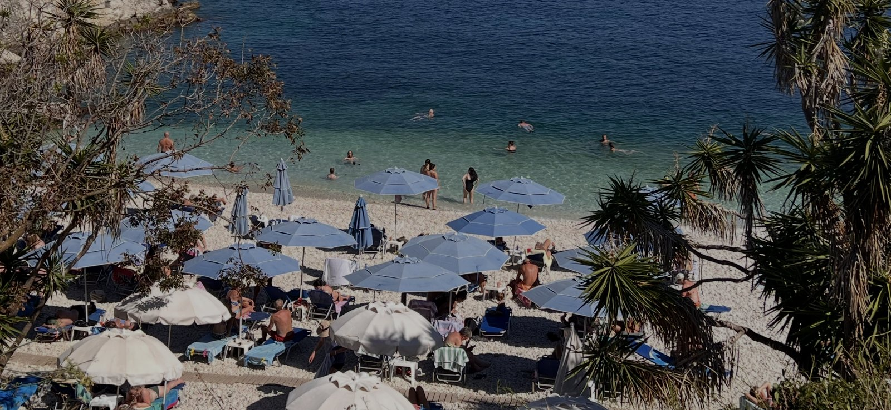
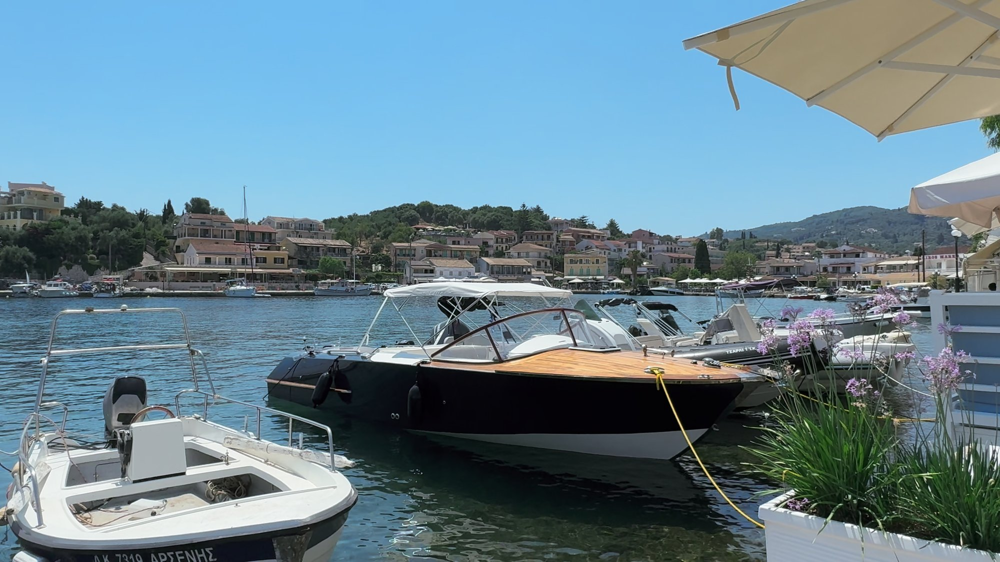
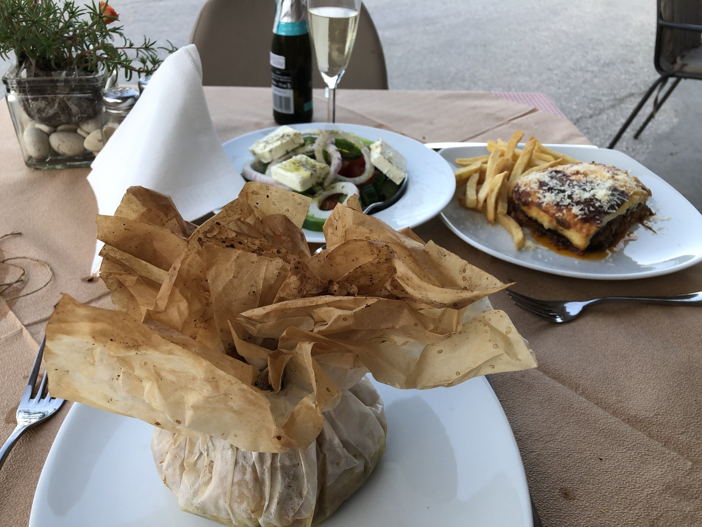

“Heaven is a place on Earth” – and in the words of the song, it's called Kassiopi!
There are some places that just have that something special, and Kassiopi, on the north-eastern coast of Corfu, is definitely one of them. With its beautiful horseshoe-shaped harbour, colourful waterfront buildings, turquoise water and traditional Greek charm, it's difficult not to fall a little bit in love with this place.
Backed by the dramatic slopes of Mount Pantokrator and looking across the sparkling Ionian Sea towards the mountains of Albania, Kassiopi has one of those picture-postcard settings that makes you want to stop, take it all in and wonder why on earth you don't live here.
Once an important Roman settlement and fishing village, Kassiopi has developed into one of Corfu's most popular coastal destinations. But despite its popularity, it has managed to retain plenty of character, with a lovely mix of traditional Greek village life, upmarket boutiques, waterfront tavernas and a rather impressive collection of boats.
And if you enjoy a bit of sunshine, beautiful beaches, a leisurely lunch and watching the world go by with a cold drink in your hand, you've definitely come to the right place.
THE HARBOUR AND VILLAGE LIFE

The heart of Kassiopi is its charming horseshoe-shaped harbour, which is undoubtedly where you'll want to spend most of your time.
The waterfront is lined with pastel-coloured buildings, traditional tavernas, cafés, bars and boutique shops, creating a lively but relaxed atmosphere. Fishing boats share the harbour with sailing yachts and impressive motorboats, and there's always something happening on the water.
It's a lovely place to simply wander around, browse the shops, stop for a coffee or find a table overlooking the harbour and watch the boats bobbing about.
Shopping
Kassiopi has a surprisingly good selection of shops, particularly if you're looking for something a little different from the usual holiday souvenirs. There are some lovely fashion and resort-wear boutiques, jewellery shops and independent stores selling everything from beachwear to holiday accessories.
It's the sort of place where you might pop in for a quick look and emerge half an hour later wondering how you've managed to acquire another holiday outfit!

Eating, drinking and watching the world go by
One of the great pleasures of Kassiopi is the choice of waterside cafés and tavernas. Whether you're after a leisurely breakfast, a long lunch or an evening meal overlooking the harbour, you're spoilt for choice.
We arrived by boat from the beautiful little village of Agios Stefanos on Corfu's east coast (more about this little gem in another blog post). Be careful not to confuse it with the Agios Stefanos on the west coast, which is a completely different proposition. Make sure you know your east from your west!
The journey took around 30 minutes, and I was captain for the day. Obviously! Had Jacquie been navigating, there's every chance we'd have ended up somewhere completely different.
We moored up and headed for a fabulous breakfast at Wave Café, a lovely casual and cosy spot overlooking the harbour. Naturally, there was cold chocolate and coffee involved. Some traditions simply cannot be broken.
Another place worth checking out is Katoi Bistro Café Bar, a great stop for a beer or sangria when you need to cool down and watch the world go by.

Greek hospitality is another thing that makes these visits so enjoyable. A drink often arrives with complimentary water, nuts or crisps, a lovely little touch that makes you feel welcome rather than simply another customer.
And when the sun starts to drop and the harbour lights begin to twinkle, Kassiopi really comes into its own. Find a waterside table, order something cold and enjoy the view. It's difficult to imagine a better way to spend an evening.
BEACHES AND CRYSTAL-CLEAR WATERS

Kassiopi has a beautiful coastline, with several small pebble beaches and sheltered coves within easy walking distance of the village. The water is exceptionally clear, with shades of turquoise and deep blue that make swimming and snorkelling particularly appealing.
Kalamionas Beach
This is the main beach close to the village, with smooth white pebbles, sunbeds and umbrellas. It has lovely views across the channel towards mainland Greece and Albania and is a convenient choice if you don't want to venture far from the harbour.
Bataria Beach
One of the prettiest little coves in the area, Bataria is tucked beneath the headland, surrounded by rocky outcrops and lush greenery. The water is wonderfully clear and the setting is particularly photogenic. It's a great spot for swimming and snorkelling.
Pipitos Beach
Another beautiful little pebble cove, Pipitos has the same gorgeous turquoise water and sheltered feel. It's a lovely alternative if you fancy escaping the busier waterfront.
Kanoni Beach
Just around the coastline, Kanoni offers another attractive swimming spot, with beautiful views and clear water. It's worth including when exploring the smaller beaches around the village.
Avlaki Beach
A short distance from Kassiopi, Avlaki is a longer, quieter pebble beach with a more peaceful atmosphere. Its open bay is popular with sailing and windsurfing enthusiasts, and there are opportunities to enjoy watersports as well as a relaxing swim.
If you're exploring this part of Corfu, it's well worth spending some time discovering the coastline rather than restricting yourself to the main village beaches.
HISTORY AND CULTURE – A CASTLE WITH A VIEW
Kassiopi isn't just another pretty Greek harbour. It has a fascinating history dating back to ancient times.
During the Roman period, between the first and fourth centuries, Kassiopi became one of the most important settlements on Corfu, thanks largely to its naturally sheltered harbour and strategic position on the sea route between Greece and Italy.
Kassiopi Castle
Overlooking the village from its rocky headland are the atmospheric ruins of Kassiopi Castle, one of three surviving Byzantine countryside castles on Corfu, alongside Angelokastro and Gardiki.
The fortress is generally dated to the late 12th century, although earlier origins have also been suggested. Its position was strategically important, allowing it to control the narrow sea passage between Corfu and the mainland.
Today, much of the castle is overgrown, but sections of its impressive defensive walls and towers remain. A walk up from the village is well worth the effort, not least for the panoramic views across the harbour and towards Albania.
It's a lovely way to escape the bustle of the waterfront for a little while and discover another side of Kassiopi.
Church of Panagia Kassopitra
In the village, you'll also find the historic Church of Panagia Kassopitra, dedicated to the Virgin Mary.
The church has a long religious history and became an important pilgrimage destination during the medieval period. It is associated with a famous miraculous icon of the Virgin Mary and has connections to the earlier history of the settlement.
It's a lovely little historical stop while wandering around the village and a reminder that beneath all the holiday activity, Kassiopi has centuries of history.
BOAT TRIPS AND EXPLORING THE COASTLINE

With its beautiful harbour and position on Corfu's north-east coast, Kassiopi is an excellent starting point for exploring the surrounding coastline by boat.
Hiring a small self-drive boat is a wonderful way to discover some of the secluded bays and beaches that are difficult to reach by road. Nearby places such as Kerasia, Agios Stefanos, Kalami and Agni are all worth exploring.
You can also enjoy organised boat trips and coastal excursions, taking in the spectacular scenery, stopping for a swim and visiting some of the island's prettiest waterfront villages.
If you prefer exploring on land, there are several lovely places within easy reach:
- Agios Stefanos: A gorgeous little harbour village, with waterfront tavernas and a relaxed atmosphere.
- Kerasia Beach: A beautiful, peaceful bay surrounded by greenery, with wonderfully clear water.
- Kalami: Famous for its beautiful bay and the White House, once home to writer Lawrence Durrell.
- Old Perithia: A fascinating historic mountain village beneath Mount Pantokrator, with traditional stone buildings and a completely different atmosphere from the coastal resorts.
- Mount Pantokrator: The highest mountain on Corfu, offering spectacular views across the island and, on a clear day, towards Albania and the Greek mainland.
These make lovely additions to a stay in Kassiopi, particularly if you have a hire car and fancy exploring beyond the village.
LOCAL FOOD – A TASTE OF CORFU
You certainly won't go hungry in Kassiopi. The choice of restaurants ranges from casual gyros and traditional Greek tavernas to more upmarket Mediterranean dining.
Being a historic fishing village, fresh seafood is naturally a big part of the local food scene. Look out for grilled fish, calamari, prawns and the daily catch, often served simply with lemon and olive oil.
It's also worth trying some of Corfu's traditional dishes:
- Sofrito: Tender veal cooked slowly with garlic, white wine, vinegar and herbs.
- Pastitsada: A rich, spiced tomato-based beef or rooster dish, traditionally served with pasta.
- Bourdeto: A traditional Corfiot fish stew, cooked in a spicy red pepper sauce.

And of course, no Greek holiday would be complete without a long lunch, a glass of something cold and absolutely no intention of rushing anywhere.
PRACTICAL INFORMATION – VISITING KASSIOPI
- Getting around: Kassiopi is very walkable. The harbour, shops, restaurants, castle and nearby beaches can all be explored on foot. Some streets and paths are hilly, so sensible footwear is useful, particularly if you're heading up to the castle.
- Getting there: Kassiopi is approximately 35–40 km from Corfu Town and the airport, depending on your route. Allow around an hour by car, although journey times can vary during the busy summer season.
- Best time to visit: May and June offer warm weather, beautiful scenery and fewer visitors. September and early October are also lovely, with warm sea temperatures and a slightly more relaxed atmosphere. July and August bring the busiest and liveliest summer conditions.
- Beaches: Most of the beaches around Kassiopi are pebble beaches, so water shoes are a useful addition to your suitcase.
- Boat hire: Boat hire and organised excursions are popular during the summer. Booking ahead is sensible during peak season.
FINAL VERDICT – IS KASSIOPI WORTH VISITING?
Absolutely!
Kassiopi manages to combine so many of the things we love about Greece: a beautiful harbour, crystal-clear swimming spots, interesting history, lovely little shops, good food and that wonderfully relaxed Greek atmosphere.
It's lively enough to have plenty going on, but it hasn't lost the charm that makes a traditional Greek coastal village so appealing.
Whether you arrive by road, spend the day exploring by boat or simply settle into a waterfront café and watch the boats come and go, Kassiopi is somewhere that's very easy to fall in love with.
And if heaven really is a place on Earth, we'd be quite happy to spend a little more time looking for it here.